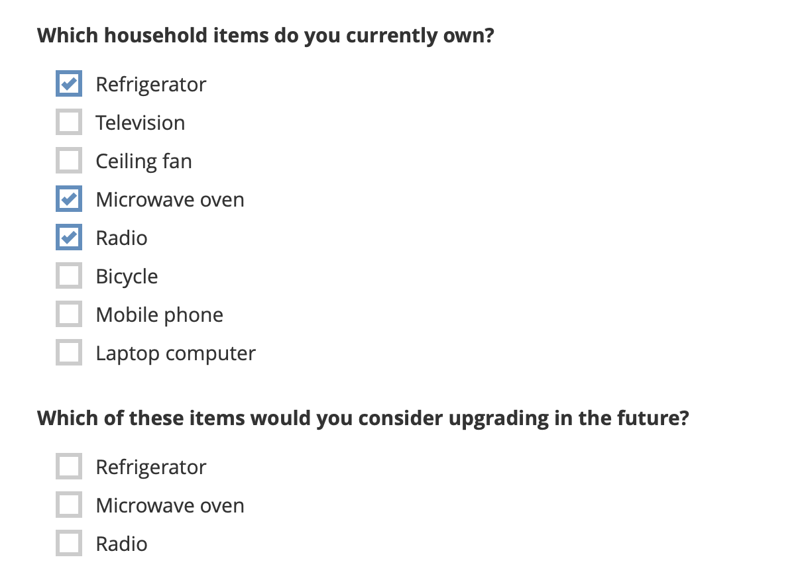

Parcourez la base de connaissances, explorez nos ressources et visitez notre Forum communautaire pour des informations plus détaillées
Dernière mise à jour : 4 jan. 2026
Les filtres de choix permettent de créer des formulaires dynamiques dans lesquels les options d’une question dépendent de la réponse à une question précédente. Cela simplifie la collecte de données en ne présentant que les choix pertinents, ce qui améliore l’efficacité et la précision de l’enquête.
Les filtres de choix peuvent être utilisés dans différents contextes, notamment :
Les listes hiérarchiques, comme les continents et les pays, où la liste des pays dépend du continent sélectionné (également appelées sélections en cascade).
La suppression d’une ou plusieurs options d’une liste si elles ne sont pas pertinentes pour un répondant en fonction de ses réponses précédentes.
La réutilisation d’une liste d’options dans un XLSForm pour plusieurs questions, lorsque la liste varie légèrement d’une question à l’autre.
La réutilisation d’une liste d’options d’une question précédente, en n’incluant que les options sélectionnées par le répondant.
Cet article explique comment ajouter des filtres de choix dans un XLSForm et présente des exemples pour différents cas d’utilisation. Les filtres de choix sont définis dans la colonne choice_filter de l”onglet survey, et mis en œuvre dans l”onglet choices.
Note : Cet article porte sur l'ajout de filtres de choix dans XLSForm. Pour en savoir plus sur l'ajout de questions à sélection en cascade dans l'interface de création de formulaires KoboToolbox (KoboToolbox Formbuilder), consultez l'article Ajouter des questions à sélection en cascade dans le Formbuilder.
Pour vous exercer à utiliser les filtres de choix dans XLSForm, consultez le cours XLSForm Fundamentals de la KoboToolbox Academy.
Les filtres de choix statiques appliquent les mêmes conditions de filtrage pour tous les répondants. Lorsque vous utilisez des filtres de choix statiques, une liste d’options est filtrée, mais elle ne varie pas en fonction des réponses précédentes. Cela peut être utile lorsque vous souhaitez réutiliser une liste d’options dans plusieurs questions de votre formulaire avec de légères variations, sans dupliquer la liste de choix plusieurs fois dans votre onglet choices.
Pour ajouter des filtres de choix statiques dans un XLSForm :
Ajoutez une question select_one ou select_multiple à votre XLSForm et définissez vos choix de réponse dans l”onglet choices.
Dans l”onglet choices, ajoutez une colonne de filtre.
Vous pouvez nommer cette colonne comme vous le souhaitez (par exemple, q2).
Dans la colonne de filtre, saisissez une valeur quelconque (par exemple, yes) en regard du ou des choix que vous souhaitez inclure dans la liste de choix de votre question.
Cette valeur servira de filtre. Il peut s’agir de n’importe quel mot ou chiffre.
Dans l”onglet survey, ajoutez une colonne choice_filter. Cette colonne contiendra l”expression de filtre de choix utilisée pour filtrer les choix de réponse.
Dans sa forme la plus simple, l’expression de filtre de choix prend le format suivant : filter = 'value'.
Par exemple, q2 = 'yes' conservera tous les choix ayant la valeur yes dans la colonne q2.
Dans l’exemple ci-dessous, la même liste de choix (activities) est utilisée pour deux questions différentes. Pour la deuxième question, la liste est filtrée afin de n’afficher que les activités de plein air.
onglet survey
type |
name |
label |
choice_filter |
|---|---|---|---|
select_one activities |
activities |
What activities do you enjoy doing in your free time? |
|
select_one activities |
outdoors_activities |
Which of these outdoor activities are available in your city? |
filter = “outdoors” |
survey |
onglet choices
list_name |
name |
label |
filter |
|---|---|---|---|
activities |
reading |
Reading |
|
activities |
swimming |
Swimming |
outdoors |
activities |
running |
Running |
outdoors |
activities |
television |
Watching television |
|
activities |
hiking |
Hiking |
outdoors |
choices |
Les filtres de choix peuvent également être utilisés pour filtrer une liste de choix en fonction d’une réponse précédente. Dans ce cas, vous aurez une question principale avec une liste principale de choix correspondante, et une question secondaire avec une liste secondaire de choix correspondante. La liste de choix de la question secondaire est filtrée en fonction de la réponse à la question principale.
Pour un exemple de XLSForm utilisant des filtres de choix dynamiques, consultez ce formulaire type.
Pour ajouter des filtres de choix dynamiques dans un XLSForm :
Ajoutez la question principale et la question secondaire à votre XLSForm et définissez leurs choix de réponse dans l”onglet choices.
Ces questions doivent être de type select_one ou select_multiple.
Dans l”onglet choices, ajoutez une colonne de filtre.
Il peut être utile de nommer cette colonne de la même façon que la question principale.
Dans la colonne de filtre, saisissez le name du choix de la liste principale auquel correspond chaque option de la liste secondaire.
Dans l”onglet survey, ajoutez une colonne choice_filter. Cette colonne contiendra l”expression de filtre de choix utilisée pour filtrer les choix de réponse.
Si la question principale est de type select_one, l’expression de filtre de choix sera filter_column = ${question_name}, où question_name désigne la question principale.
Si la question principale est de type select_multiple, l’expression de filtre de choix sera selected(${question_name}, filter_column).
Lorsqu’un répondant sélectionne une option dans la question principale, la liste de choix de la question secondaire est filtrée pour n’inclure que les choix correspondants.
Dans l’exemple ci-dessous, continent est la question principale et country est la question secondaire. La liste de choix de la question country sera filtrée en fonction de la réponse à la question continent.
onglet survey
type |
name |
label |
choice_filter |
|---|---|---|---|
select_one continent |
continent |
Continent |
|
select_one country |
country |
Country |
continent = ${continent} |
survey |
onglet choices
list_name |
name |
label |
continent |
|---|---|---|---|
continent |
africa |
Africa |
|
continent |
asia |
Asia |
|
country |
malawi |
Malawi |
africa |
country |
zambia |
Zambia |
africa |
country |
india |
India |
asia |
country |
pakistan |
Pakistan |
asia |
choices |
Vous pouvez créer des filtres de choix plus avancés en utilisant des opérateurs logiques, des opérateurs mathématiques, des fonctions et des expressions régulières (regex) dans vos expressions de filtre de choix. Cela permet un filtrage des options hautement personnalisé et précis, adapté aux exigences spécifiques de collecte de données et aux caractéristiques des répondants.
Note : Dans les expressions de filtre de choix avancées, la colonne name de l'onglet choices peut être utilisée comme colonne de filtre.
Voici des exemples d’expressions de filtre de choix avancées dans XLSForm :
Filtre de choix |
Description |
|---|---|
|
Affiche uniquement les réponses qui ont été sélectionnées dans une |
|
Combine des expressions de filtre de choix de sorte que les deux conditions doivent être remplies pour que le choix soit affiché. |
|
Exclut l’option Aucun d’une liste de choix. |
|
Inclut les choix sélectionnés dans une question précédente ainsi qu’une option Aucun (même si elle n’a pas été sélectionnée précédemment). |
|
Inclut les choix basés sur une question précédente ainsi qu’une option Autre. |
|
Inclut les choix basés sur une question précédente ainsi qu’un ensemble d’options qui doivent toujours être incluses. |
|
Utilise des chiffres dans la colonne de filtre au lieu de texte, et filtre en fonction d’un chiffre issu d’une question ou d’un calcul précédent. |
|
Utilise des instructions conditionnelles pour afficher des choix de manière conditionnelle en fonction du profil du répondant. |
Pour en savoir plus sur la création d'expressions de logique de formulaire dans XLSForm, consultez l'article Introduction à la logique de formulaire dans XLSForm.
Dans l’exemple ci-dessous, la liste de choix sous-jacente pour Q1 et Q2 est identique, mais seules les options sélectionnées dans Q1 seront affichées aux répondants lorsqu’ils répondront à Q2.
onglet survey
type |
name |
label |
choice_filter |
|---|---|---|---|
select_multiple item |
Q1 |
Which household items do you currently own? |
|
select_multiple item |
Q2 |
Which of these items would you consider upgrading in the future? |
selected(${Q1}, name) |
survey |
onglet choices
list_name |
name |
label |
|---|---|---|
item |
fridge |
Refrigerator |
item |
tv |
Television |
item |
fan |
Ceiling fan |
item |
microwave |
Microwave oven |
item |
radio |
Radio |
item |
bike |
Bicycle |
item |
phone |
Mobile phone |
item |
laptop |
Laptop computer |
choices |
Dans le formulaire obtenu, Q2 n’affichera que les options choisies dans Q1, comme illustré ci-dessous.

allow_choice_duplicates sur yes.
Avez-vous trouvé ce que vous cherchiez ? La traduction était-elle claire ? Manquait-il quelque chose ?
Partagez vos commentaires pour nous aider à améliorer cet article !
KoboToolbox est maintenu par Kobo Inc.